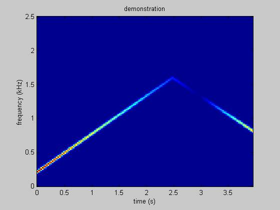

To
do this project you need to have full control over frequency content. You can arbitrarily specify the frequency,
but then you need to do discrete integration to obtain the phase angle. This is implemented in a matlab script.
Here
is a simple demonstration of the matlab script. The code and spectrogram are below.
fs=5e3;
ff=[linspace(200,1600,2.5*fs) linspace(1600,800,1.5*fs)];
aa=[linspace(1,0,3*fs) linspace(0,0.75,fs)];
y=yourfun(aa,ff,fs);
calspec(y,[],fs)
Figure 1.
